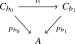
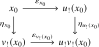

Proposition 6.5.15. Let \(p\colon C\to A\times B\) be a functor. We denote by \(\pr_A\colon A\times B\to A\) and \(\pr_B\colon A\times B\to B\) the obvious projections, and we assume that \(\pr_B p\colon C\to B\) is a cocartesian fibration. The property that \(p\) is a cocartesian fibration is equivalent to the following list of properties to be fulfilled altogether:
(i) The functor \(p\colon C\to A\times B\) is cocartesian over \(B\), meaning that it sends \(\pr_Bp\)-cocartesian morphisms to \(\pr_B\)-cocartesian morphisms;
(ii) For any object \(b\) of \(B\), the induced functor \(p_b\colon C_b\to A\) is a cocartesian fibration;
(iii) For any morphism \(v\colon b_0\to b_1\) in \(B\), the covariant transport functor \[ v_!\colon C_{b_0}\to C_{b_1} \] sends \(p_{b_0}\)-cocartesian morphisms to \(p_{b_1}\)-cocartesian morphisms.
Proof
Write \(q=\pr_Bp\). By Example 4.8.5 and Proposition 6.5.4, the \(\pr_B\)-cocartesian morphisms are the pairs \((u,v)\) for which \(u\) is an isomorphism in \(A\) and \(v\) is an arbitrary morphism in \(B\).
Suppose first that \(p\) is a cocartesian fibration. We repeatedly use the pointwise characterization from Definition 4.5.5: pasting the relevant pullback squares shows that a \(p\)-cocartesian morphism whose image is \(\pr_B\)-cocartesian is \(q\)-cocartesian, and that a \(q\)-cocartesian morphism whose image is \(\pr_B\)-cocartesian is \(p\)-cocartesian. Given a \(q\)-cocartesian morphism with source \(x\) and image \(v\) in \(B\), compare it with a \(p\)-cocartesian lift at \(x\) of \((\id_{\pr_Ap(x)},v)\). The latter is \(q\)-cocartesian by the first implication, so uniqueness of \(q\)-cocartesian lifts identifies the two morphisms. Its image under \(p\) is therefore \(\pr_B\)-cocartesian, which proves (i). Condition (ii) follows from stability of cocartesian fibrations under base change.
For (iii), let \(\alpha\) be a \(p_{b_0}\)-cocartesian morphism and form its naturality square under transport along \(v\colon b_0\to b_1\). Its vertical morphisms are \(q\)-cocartesian and have \(\pr_B\)-cocartesian images by (i), hence they are \(p\)-cocartesian by the second implication above. The upper horizontal morphism is also \(p\)-cocartesian, by the base-change characterization of cocartesian morphisms. Consequently the two composites around the square are \(p\)-cocartesian, and cancellation in Lemma 4.5.12 shows that the lower horizontal morphism is \(p\)-cocartesian. Since it lies over the identity of \(b_1\), it is \(p_{b_1}\)-cocartesian. This proves (iii).
Conversely, assume all three conditions.
In the context of an object \(b\) of \(B\), the fiber of \(\pr_B\) is \(A\). For a morphism \(v\colon b_0\to b_1\) in \(B\), transport between these fibers is the identity of \(A\), considered in the context of \(v\). Condition (i) thus ensures that we have canonical commutative triangles of the form

Let us consider a morphism \(f\colon x_0\to x_1\) in \(C\).
Its image by \(p\) is of the form \(p(f)=(u,v)\) with \(u\colon a_0\to a_1\) and \(v\colon b_0\to b_1\)
morphisms in \(A\) and in \(B\), respectively. This yields a commutative diagram of the following form in \(A\times B\):
 We consider the morphism \(\varepsilon_{x_0}\colon x_0\to u_!(x_0)\)
obtained as the image in \(C\) of the \(p_{b_0}\)-cocartesian lift of \(u\). The lift comes with an identification of
\(\pr_B(p(\varepsilon_{x_0}))\) with the identity of \(b_0\). Seeing \(u_!(x_0)\) as an object of the fiber \(C_{b_0}\) we may now apply the functor \(v_!\) and get an object \(v_!u_!(x_0)\) in the fiber \(C_{b_1}\).
Alternatively, we may as well apply covariant transport along \(v\) to \(x_0\), yielding an object \(v_!(x_0)\)
in the fiber \(C_{b_1}\), using the identification \(\pr_A p(v_!(x_0))=a_0\) supplied by condition (i)
and then apply covariant transport along \(u\). The fact that \(v_!(\varepsilon_{x_0})\) is a \(p_{b_1}\)-cocartesian
morphism ensures that we have a canonical identification of the form
\[
v_!u_!(x_0)\iso u_!v_!(x_0)
\]
inducing a commutative square of the form
We consider the morphism \(\varepsilon_{x_0}\colon x_0\to u_!(x_0)\)
obtained as the image in \(C\) of the \(p_{b_0}\)-cocartesian lift of \(u\). The lift comes with an identification of
\(\pr_B(p(\varepsilon_{x_0}))\) with the identity of \(b_0\). Seeing \(u_!(x_0)\) as an object of the fiber \(C_{b_0}\) we may now apply the functor \(v_!\) and get an object \(v_!u_!(x_0)\) in the fiber \(C_{b_1}\).
Alternatively, we may as well apply covariant transport along \(v\) to \(x_0\), yielding an object \(v_!(x_0)\)
in the fiber \(C_{b_1}\), using the identification \(\pr_A p(v_!(x_0))=a_0\) supplied by condition (i)
and then apply covariant transport along \(u\). The fact that \(v_!(\varepsilon_{x_0})\) is a \(p_{b_1}\)-cocartesian
morphism ensures that we have a canonical identification of the form
\[
v_!u_!(x_0)\iso u_!v_!(x_0)
\]
inducing a commutative square of the form
By Proposition 6.5.4, it remains to prove that locally \(p\)-cocartesian morphisms are stable under composition in \(C\). Every locally \(p\)-cocartesian morphism is isomorphic to one of the form \(\varepsilon_{v_!(x_0)}\eta_{x_0}\) constructed above. Consider two composable morphisms in this normal form, with composable \(B\)-components \(v\) and \(v'\). Naturality of the \(q\)-cocartesian lift gives a commutative square as above which moves the fiberwise cocartesian part of the first morphism past the \(B\)-transport part of the second. By condition (iii), the transported horizontal morphism is again cocartesian in the target fiber. We may therefore compose the two horizontal parts using closure of \(p_b\)-cocartesian morphisms under composition, and compose the two vertical parts using closure of \(q\)-cocartesian morphisms under composition. The canonical identifications \[ (v'v)_! = v'_!v_! \] from Corollary 4.5.11 identify the resulting composite with the normal-form lift for the composite morphism in \(A\times B\). Thus locally \(p\)-cocartesian morphisms are closed under composition, and \(p\) is a cocartesian fibration.
From Section 6.5, Pointwise and fiberwise criteria for fibrations.